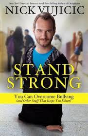
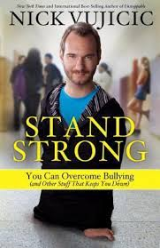

"The man who defies gravity with a smile and teaches us that life’s challenges are opportunities in disguise."
Nick Vujicic

"The man who defies gravity with a smile and teaches us that life’s challenges are opportunities in disguise."
Nick Vujicic is a world-renowned motivational speaker, author, and evangelist. Born without arms and legs due to Tetra-amelia syndrome, Nick has inspired millions around the globe with his story of overcoming immense challenges to lead a fulfilling and impactful life. Nick Vujicic real name is Nicholas James Vujicic, but everyonecalls him Nick. Nick was born on the 4 of December 1982 in Melbourne Australia
Nick’s resilience is evident in his ability to overcome physical and emotional obstacles. Despite facing discrimination and physical limitations, he has built a successful career and a fulfilling personal life.
Nick’s infectious positivity has been a cornerstone of his success. He often emphasizes the power of a positive mindset in overcoming challenges and achieving one’s goals.
Nick’s motivational speaking career has had a profound impact on audiences worldwide. He shares his journey with honesty and humor, inspiring others to embrace their own challenges and pursue their dreams with determination.
Nick has received numerous awards for his contributions to motivational speaking and philanthropy, including the “Australian Young Citizen of the Year” award. Nick is also the author of several best-selling books, including “Life Without Limits,” “Unstoppable,” “Stand Strong,” and “Be the Hands and Feet.”
 

Nick founded the non-profit organization Life Without Limbs in 2005. The organization’s mission is to spread the message of hope and love to people all over the globe. Nick also supports numerous other charitable causes and organizations. Nick is a passionate advocate for people with disabilities, sharing his story to promote acceptance and understanding. He also speaks out against bullying and promotes positive self-esteem.
Nick married Kanae Miyahara in 2012, and they have four beautiful children together. His family is a source of great joy and support in his life. Nick enjoys swimming, painting, and spending time with his family. He is also an avid traveler, having visited numerous countries for his speaking engagements.
Nick has been featured in numerous interviews and documentaries, including appearances on “60 Minutes” and “Oprah’s Lifeclass.” His life story was also the subject of the short film “The Butterfly Circus.” Nick is active on social media platforms, where he shares motivational content and updates about his life and work. Follow him on Facebook, Instagram, and Twitter.
Inspirational Quotes:
“If you can’t get a miracle, become one.”
“It’s a lie to think you’re not good enough. It’s a lie to think you’re not worth anything.”
“The challenges in our lives are there to strengthen our convictions. They are not there to run us over.”
If you have time, you should read more about this incredible human being on his Wikipedia entry.